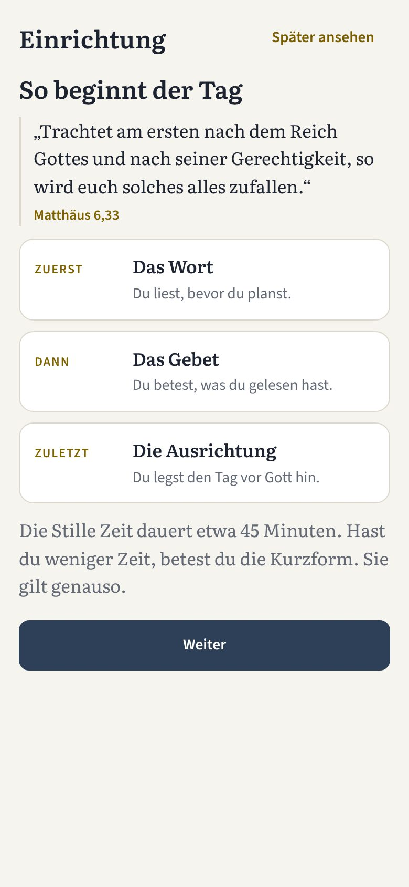
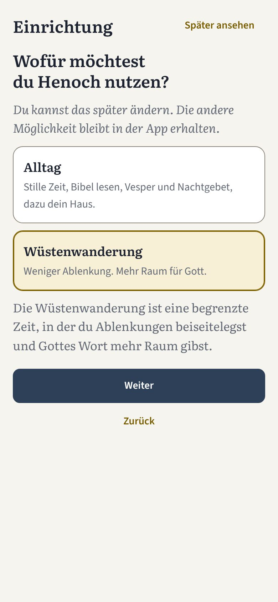
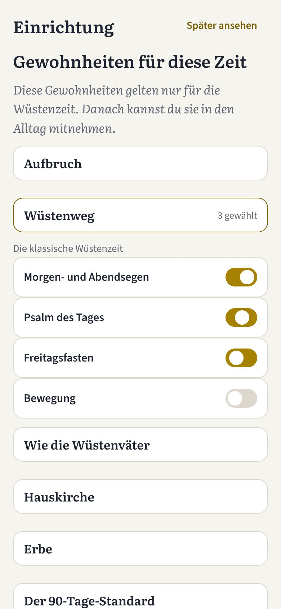
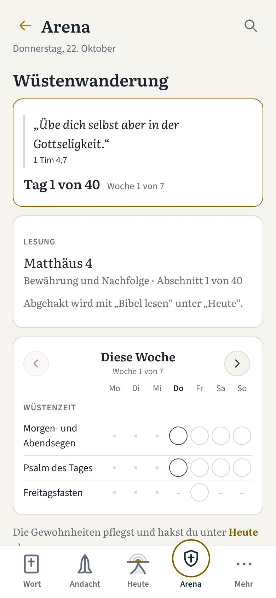
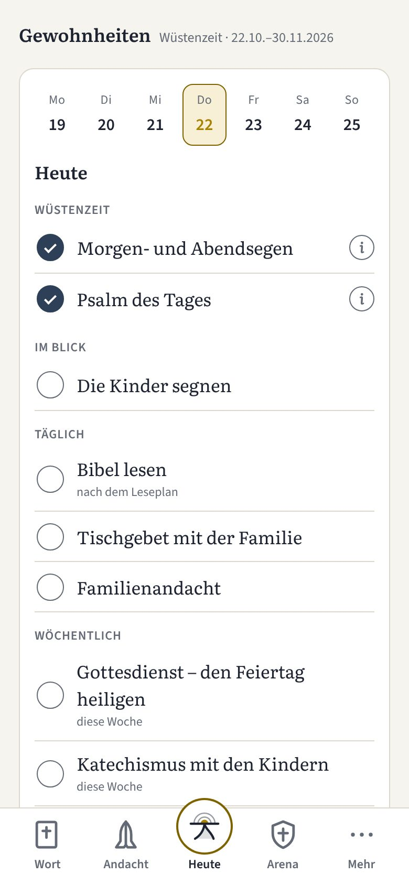
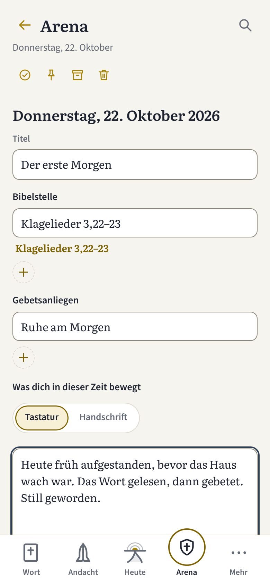
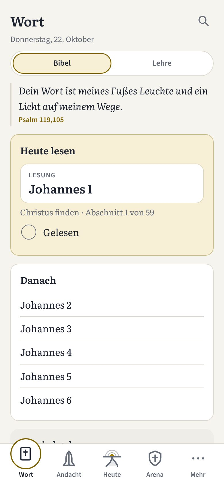
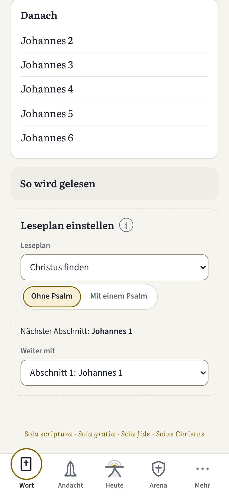

Neu in Henoch · Oktober 2026
Ankommen, bleiben, lesen
Drei Neuerungen in Henoch
Bruder, kennst du das? Du öffnest eine App für die Stille Zeit und weißt nicht, wo du anfangen sollst. Du nimmst dir eine Zeit der Stille vor und weißt nach drei Wochen nicht mehr, wo du stehst. Oder du sitzt morgens vor der Bibel und fragst dich, was du heute lesen sollst.
An diesen drei Stellen habe ich in den letzten Wochen an Henoch gearbeitet. Alle drei machen die App ruhiger und den Weg zum Wort kürzer.
1. Die Einrichtung: der erste Start
Beim ersten Öffnen führt dich Henoch in wenigen Schritten zur ersten Stillen Zeit. Zuerst siehst du, wie der Tag beginnt: zuerst das Wort, dann das Gebet, zuletzt die Ausrichtung. Du liest, bevor du planst. Danach stellst du ein, was für dein Haus gilt: deine Zeiten, deine Gewohnheiten, deinen Leseplan.
Du wählst deinen Weg. Der Alltag ist für den gewöhnlichen Tag mit Stiller Zeit, Bibellese, Vesper und Nachtgebet. Die Wüstenwanderung ist für eine begrenzte Zeit mit weniger Ablenkung und mehr Raum für Gott. Wer sie wählt, legt gleich Dauer und Beginn fest und wählt seine Gewohnheiten.



Was dir das bringt
- Du bestimmst das Tempo. Jede Seite lässt sich überspringen oder auf später legen, und alles lässt sich später ändern. Die Einrichtung findest du jederzeit wieder unter Mehr → Anleitung.
- Es bleibt bei dir. Deine Einträge liegen nur auf deinem Gerät, ohne Konto und ohne Tracker. Für Schuld gibt es kein Eingabefeld. Sie wird gebetet, nicht notiert, und am Ende steht das Wort aus 1. Johannes 1,9.
Trachtet am ersten nach dem Reich Gottes und nach seiner Gerechtigkeit, so wird euch solches alles zufallen.
Matthäus 6,332. Die Wüstenwanderung: übersichtlich und ruhig
Eine Wüstenzeit trägt dich nur, wenn du jederzeit siehst, wo du bist, und wenn nichts dich drängt. Darum habe ich sie neu geordnet. Die Gewohnheiten der Wüstenzeit hakst du an einem einzigen Ort ab: unter Heute, in einer eigenen Gruppe. Die Arena zeigt dir den Weg als Ganzes.
Dort steht oben, der wievielte Tag es ist, und darunter der Abschnitt des Tages aus deinem Leseplan. Dann folgt die Woche von Montag bis Sonntag, eine Zeile je Gewohnheit. Ein abgehakter Tag ist gefüllt, ein nicht abgehakter bleibt neutral grau.



Dazu kommt ein Tagebuch. Dort hältst du fest, was dich in dieser Zeit bewegt und was Gott dir zeigt, mit Bibelstellen und Gebetsanliegen, getippt oder von Hand geschrieben. Sünde wird dort nicht notiert; sie gehört ins Gebet.
Was dir das bringt
- Ein Ort statt vieler. Du musst nicht überlegen, wo du etwas abhakst. Es ist immer Heute.
- Kein Druck. Ein Tag, der nicht gelang, bleibt grau und neutral. Es gibt keine Serie, die reißt. Du machst am nächsten Tag weiter.
… übe dich selbst aber in der Gottseligkeit.
1. Timotheus 4,73. Lesepläne nach Abschnitten
Die Frage „Was lese ich heute?“ soll dich nicht den Morgen kosten. Unter Wort → Leseplan einstellen gibt es neue Pläne, in denen die Kapitel gleichmäßig auf Abschnitte verteilt sind:
- Christus finden: für den Einstieg. Die Bücher, die nach Luthers Vorrede auf das Neue Testament von 1522 Christus am deutlichsten zeigen: Johannes, 1. Johannes, Römer, Galater, Epheser und 1. Petrus. Auf Wunsch liest du dazu einen Psalm.
- Mit Paulus unterwegs: die Apostelgeschichte mit den Briefen an ihrem Ort, in 40, 60 oder einer eigenen Zahl von Tagen.
- Die Bibel in einem Jahr.
Unter Heute lesen steht der Abschnitt, der dran ist. Gehst du in der Stillen Zeit über den Schritt „Das Wort“ weiter, hakt Henoch ihn von selbst ab, und der Plan rückt zum nächsten Abschnitt. Zur Wüstenwanderung gehört ein eigener Plan, „Bewährung und Nachfolge“: die Versuchung Jesu, die Bergpredigt, das Johannesevangelium, der Jakobusbrief, der 1. Petrusbrief und der Hebräerbrief. Solange er läuft, ruht dein bisheriger Plan und geht danach dort weiter, wo du aufgehört hast.


Was dir das bringt
- Du musst nichts nachholen. Jeder Plan merkt sich, wo du stehst. Wer drei Tage aussetzt, macht beim nächsten Abschnitt weiter. Es gibt nie „Du bist im Rückstand“.
- Die Bibel bleibt in deiner Hand. Henoch nennt dir die Stelle; gelesen wird in deiner gedruckten Bibel, mit Farbstiften, wenn du magst.
Dein Wort ist meines Fußes Leuchte und ein Licht auf meinem Wege.
Psalm 119,105[TEXT VON ANDREAS: Schlusswort an den Bruder]
Die Einrichtung findest du unter Mehr → Anleitung, die Lesepläne unter Wort. Wie du Henoch auf dem Handy installierst, steht auf der Startseite; den ganzen Weg durch den Tag zeigt die Anleitung.
Bibeltexte nach der Lutherbibel 1912. Bilder aus der Vorschau von Henoch mit Beispieldaten, Version 1.22.